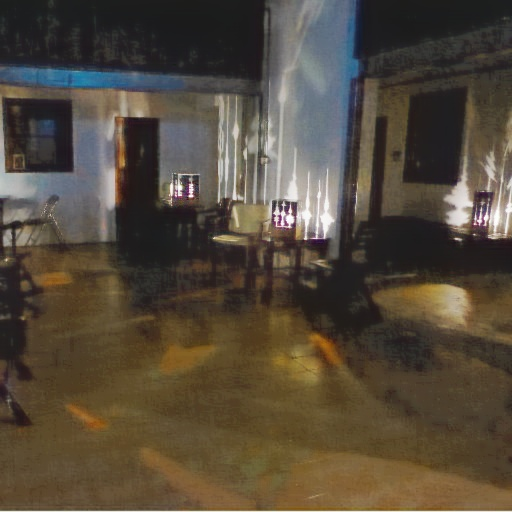
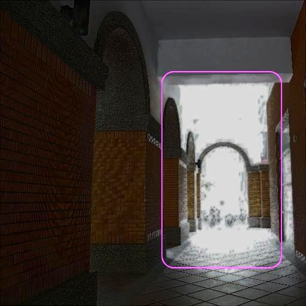
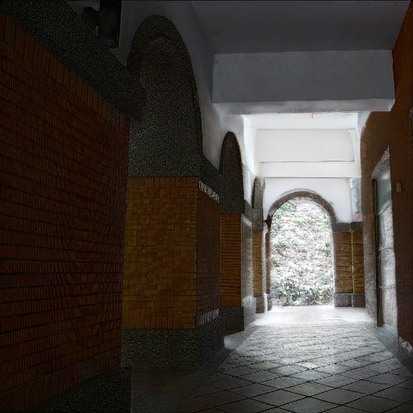
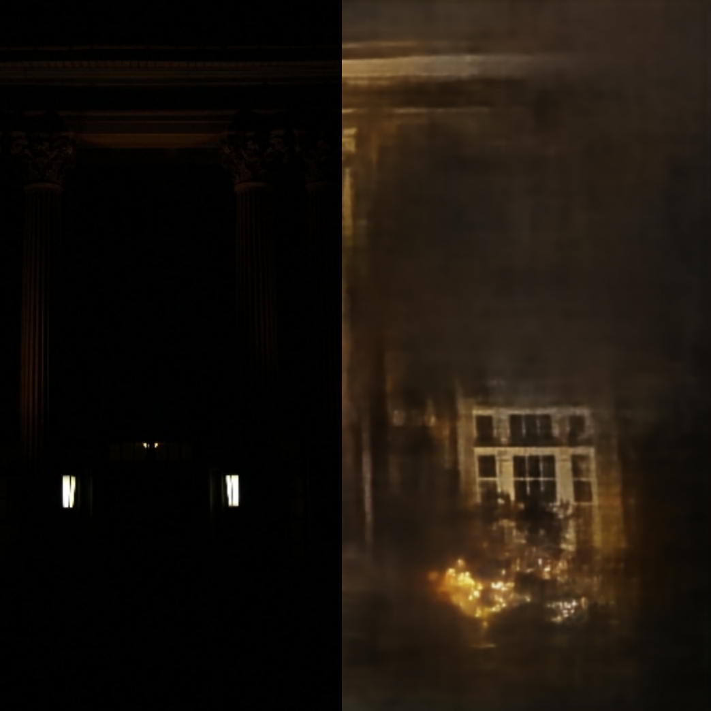
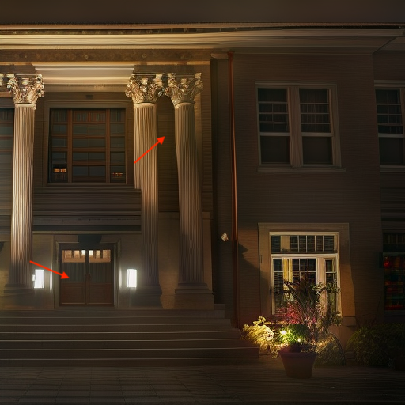
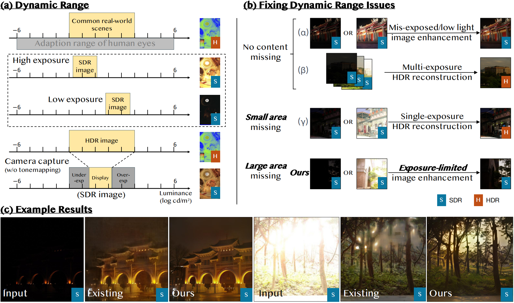
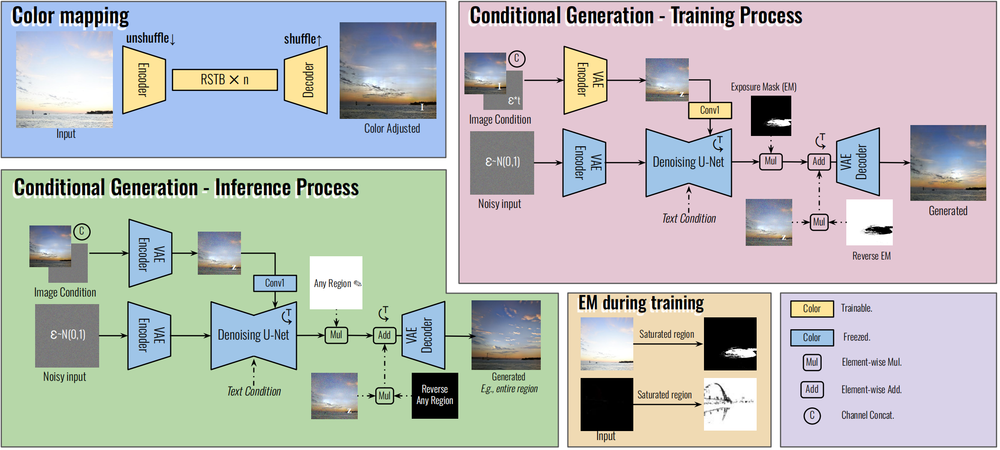

Sagiri: Low Dynamic Range Image Enhancement with Generative Diffusion Prior
Baiang Li1,5
Sizhuo Ma2
Yanhong Zeng1
Xiaogang Xu3,4
Zhao Zhang5
Youqing Fang1
Jian Wang✝2
Kai Chen1✝
✝Corresponding authors.
1Shanghai AI Laboratory
2Snap Research
3The Chinese University of Hong Kong
4Zhejiang University
5Hefei University of Technology
[Paper]
[Github]
[BibTeX]
What can Sagiri do?

After restoration model
Restoration model + Sagiri(On entire image)

After restoration model

Restoration model + Sagiri(With region selection)

Input | After restoration model
Restoration model + Sagiri(With prompt a)

Restoration model + Sagiri(With prompt b)
Prompt a: `A building with a red brick exterior, white columns, and a black door...'; Prompt b: `A building with a black brick exterior, white columns, and a red door...'. Please zoom in to see more details.
What's our task?
(a) Background: Common real-world scenes have an extensive dynamic range (1st row); camera image, usually 8-bit, has a limited dynamic range; images with different exposure times cover different zones of the dynamic range of the scene; the bright regions can easily get over-saturated and dark areas can be close to 0 or overwhelmed by noise (2nd and 3rd rows); HDR image, usually 32-bit or 64-bit, can represent the information of the original scene well traditionally through merging different exposure LDR images (4th row); the HDR image needs tone mapping to be shown on a LDR display or be saved as a traditional 8-bit image format (5th row).
(b) Our task is single LDR image enhancement: given an LDR image, output an enhanced version with improved tone mapping as well as detail generation or enhancement. It includes four subtasks as outlined on the right; our stage 1 Latent-SwinIR$_c$ is responsible for subtask 1 tone mapping, and our proposed Sagiri is responsible for subtasks 2-4 generating content on originally over-saturated and dark regions, enhancing details and reducing noise.

Methodology of Sagiri
Capturing the full dynamic range of natural scenes presents a significant challenge in photography, often resulting in Low Dynamic Range images with over and under-exposed areas, known as Detail-Deprived Zones, where content details are significantly diminished.
In our project, we propose Sagiri model which is a versatile tool for fine-tuning restored results, generating more accurate details in known regions, and producing high-quality content in Detail-Deprived Zones. Additionally, it allows users to specify where and what to synthesize in areas lacking content, enhancing user engagement and control.

Project page template is borrowed from AnimateDiff..